"En cada rincón de nuestra tierra hay historias que merecen ser contadas. Como estudiantes, somos productores de conocimiento, guardianes del legado de nuestros parajes y voces que llevan el pasado y el presente hacia el futuro. Esta wiki refleja nuestra curiosidad, esfuerzo y compromiso por construir y compartir saberes que trascienden fronteras."
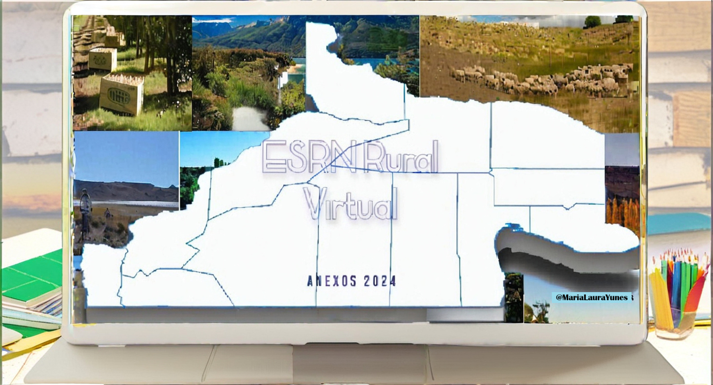
Aportes de los estudiantes sobre clase de WIKIPARAJES
Chelforó
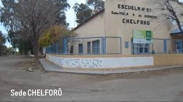
1. Descripción General del Paraje
Chelforó es conocido por su rica historia y su entorno natural. Es un lugar ideal para aprender sobre la cultura local y disfrutar de la belleza del paisaje. Su gente es acogedora, y las tradiciones aún se mantienen vivas en cada rincón del paraje.
2. Ubicación Relativa
País: Argentina Provincia: Río Negro Departamento: General Roca Región: Patagónica
3. Ubicación Absoluta
Coordenadas Geográficas: -39.1234, -67.1234
4. Población
Cantidad de Habitantes: 300
5. Historia
Fundación: Fundada en 1905 por colonos europeos. Poblamiento: La llegada de los primeros pobladores se dio en el siglo XX, quienes se dedicaron principalmente a la agricultura y la ganadería. Hechos Salientes: Ha sido escenario de importantes eventos culturales y económicos, como festivales que celebran las tradiciones locales y ferias agrícolas que resaltan la producción de la zona.
6. Geografía
Naturaleza: Rodeado de montañas y ríos, ofrece paisajes espectaculares. La flora y fauna locales son diversas, con especies nativas que se adaptan a las condiciones del entorno. Clima: Templado, con veranos cálidos e inviernos fríos. Las precipitaciones son moderadas, lo que favorece la agricultura.
7. Transporte
Medios de Transporte: Se accede por ruta nacional y tiene un servicio de transporte local. También hay caminos rurales que facilitan el acceso a las zonas productivas.
8. Economía
Actividades Económicas: Agricultura y turismo son las principales fuentes de ingreso. Los productos agrícolas de Chelforó se destacan en mercados locales y regionales. Recursos y Producción: La producción de frutas y verduras es notable, incluyendo cultivos de manzanas, peras y hortalizas. Además, el turismo rural ha comenzado a crecer, atrayendo visitantes interesados en las actividades al aire libre y la cultura local.
Aguada de Guerra
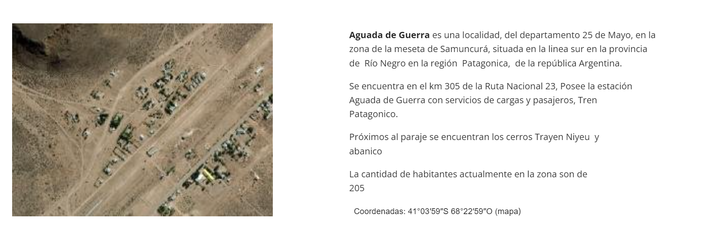
1. Descripción General del Paraje:
Aguada de Guerra es un paraje emblemático que combina tradición y modernidad, ofreciendo un atractivo único para los visitantes y residentes.
2. Ubicación Relativa:
- País: Argentina
- Provincia: Río Negro
- Departamento: Conesa
- Región: Patagónica
5. Historia:
- Fundación: Se fundó en 1920, impulsada por el desarrollo agrícola de la región.
- Poblamiento: A lo largo de la historia, la agricultura ha atraído a familias de diversas procedencias en busca de nuevas oportunidades.
- Hechos Salientes: La llegada del ferrocarril en 1935 fue un hito crucial para su desarrollo, facilitando el transporte de productos y personas.
6. Geografía:
- Naturaleza: Predomina un paisaje árido, caracterizado por la presencia de vegetación autóctona que se adapta a las condiciones del entorno.
- Clima: Seco, con precipitaciones escasas a lo largo del año, lo que influye en la vida diaria de sus habitantes.
7. Transporte:
- Medios de Transporte: El acceso se realiza principalmente por ruta provincial, y aunque hay escaso transporte público, los residentes suelen utilizar vehículos particulares para sus desplazamientos.
8. Economía:
- Actividades Económicas: La agricultura y la cría de ganado son las principales actividades económicas del paraje.
- Recursos y Producción: La zona destaca en la producción de carne y cultivos de cebolla y ajo, que son fundamentales para la economía local.
Rincón Treneta
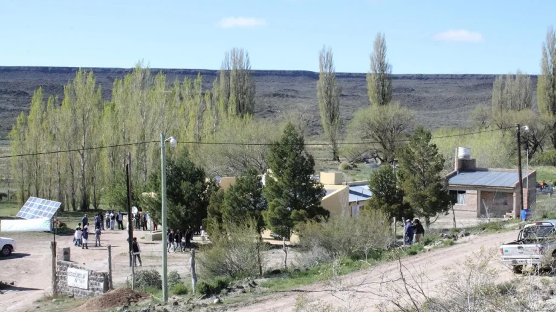
1. Inicio
Descripción General del Paraje:
[Introduce el paraje con una breve descripción que resuma su importancia y características generales. Este podría incluir aspectos culturales, tradiciones locales, y el atractivo que presenta para visitantes y residentes.]
2. Ubicación Relativa
País: [Indica el país en el que se encuentra el paraje.]
Provincia: [Especifica la provincia o estado.]
Departamento: [Proporciona el nombre del departamento o área administrativa correspondiente, si aplica.]
Región: [Describe la región o área geográfica más amplia a la que pertenece el paraje.]
3. Ubicación Absoluta
Coordenadas Geográficas: [Proporciona las coordenadas exactas (latitud y longitud) del paraje.]
4. Población
Cantidad de Habitantes: [Ofrece los datos actuales sobre la población del paraje.]
5. Historia
Fundación: [Describe cuándo y cómo se fundó el paraje, incluyendo datos sobre los fundadores y su motivación.]
Poblamiento: [Explica cómo se establecieron las primeras poblaciones en el área, mencionando las comunidades o grupos que habitaron el lugar.]
Hechos Salientes: [Menciona eventos históricos importantes que han influido en el desarrollo del paraje, como la llegada de migrantes, construcciones significativas o cambios en la administración.]
6. Geografía
Naturaleza: [Detalla las características naturales del paraje, incluyendo paisajes, formaciones geológicas, cuerpos de agua y ecosistemas presentes.]
Clima: [Describe el clima predominante, incluyendo aspectos como temperatura, precipitaciones y estaciones del año. Se pueden mencionar fenómenos climáticos relevantes.]
7. Transporte
Medios de Transporte: [Indica las principales formas de transporte disponibles en el paraje, como carreteras, ferrocarriles, transporte público, y su conectividad con otras localidades.]
8. Economía
Actividades Económicas: [Explica las principales actividades económicas en el paraje, como agricultura, turismo, industria, ganadería, y cualquier otro sector relevante.]
Recursos y Producción: [Menciona los recursos naturales y productos más relevantes obtenidos en el área, destacando aquellos que son característicos o que aportan significativamente a la economía local.]
Comicó
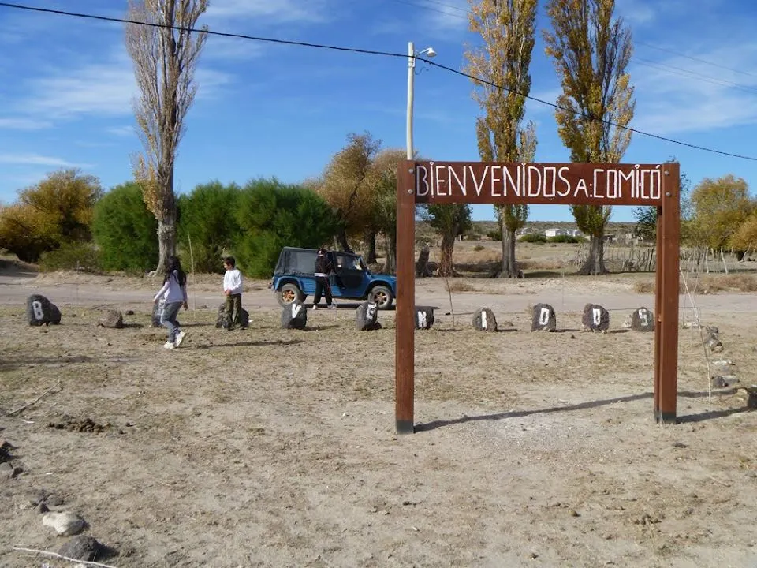
1. Inicio
Descripción General del Paraje:
[Introduce el paraje con una breve descripción que resuma su importancia y características generales. Este podría incluir aspectos culturales, tradiciones locales, y el atractivo que presenta para visitantes y residentes.]
2. Ubicación Relativa
País: [Indica el país en el que se encuentra el paraje.]
Provincia: [Especifica la provincia o estado.]
Departamento: [Proporciona el nombre del departamento o área administrativa correspondiente, si aplica.]
Región: [Describe la región o área geográfica más amplia a la que pertenece el paraje.]
3. Ubicación Absoluta
Coordenadas Geográficas: [Proporciona las coordenadas exactas (latitud y longitud) del paraje.]
4. Población
Cantidad de Habitantes: [Ofrece los datos actuales sobre la población del paraje.]
5. Historia
Fundación: [Describe cuándo y cómo se fundó el paraje, incluyendo datos sobre los fundadores y su motivación.]
Poblamiento: [Explica cómo se establecieron las primeras poblaciones en el área, mencionando las comunidades o grupos que habitaron el lugar.]
Hechos Salientes: [Menciona eventos históricos importantes que han influido en el desarrollo del paraje, como la llegada de migrantes, construcciones significativas o cambios en la administración.]
6. Geografía
Naturaleza: [Detalla las características naturales del paraje, incluyendo paisajes, formaciones geológicas, cuerpos de agua y ecosistemas presentes.]
Clima: [Describe el clima predominante, incluyendo aspectos como temperatura, precipitaciones y estaciones del año. Se pueden mencionar fenómenos climáticos relevantes.]
7. Transporte
Medios de Transporte: [Indica las principales formas de transporte disponibles en el paraje, como carreteras, ferrocarriles, transporte público, y su conectividad con otras localidades.]
8. Economía
Actividades Económicas: [Explica las principales actividades económicas en el paraje, como agricultura, turismo, industria, ganadería, y cualquier otro sector relevante.]
Recursos y Producción: [Menciona los recursos naturales y productos más relevantes obtenidos en el área, destacando aquellos que son característicos o que aportan significativamente a la economía local.]
Yaminué
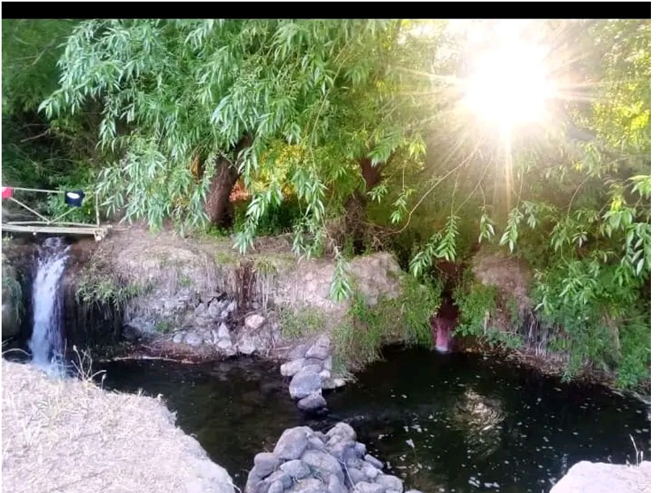
1. Descripción General del Paraje
Yaminué es un paraje ubicado en el Departamento 9 de Julio, en la región sur de la provincia de Río Negro.
Se encuentra a 67 km al sur de la localidad de Ministro Ramos Mexía y a 20 km de Treneta. Su paisaje se caracteriza por
una extensa vegetación y quebradas, formándose el Arroyo Yaminué en plena Meseta de Somuncura.
2. Ubicación Relativa
País: Argentina
Provincia: Río Negro
Departamento: 9 de Julio
Región: Meseta Patagónica
4. Población
Según el último censo de 2022, Yaminué cuenta con aproximadamente 130 habitantes. Los primeros pobladores,
registrados entre 1919 y 1920, incluyeron a familias como los Mulato y los Inaguaquel.
5. Historia
Yaminué tiene un origen con varias versiones. Algunos lo relacionan con el topónimo “Yamnaue” mencionado por
el naturalista George Claraz. Otros, como el Perito Moreno, lo asociaron con “Yemneu,” que significa paradero o
campamento. Antiguamente, la población era nómade, compuesta por los Tehuelches Septentrionales. En 1941,
se creó la primera escuela del paraje, la Escuela N° 145 “Estanislao del Campo”, siendo un hito en su desarrollo.
A lo largo de los años, se han formado varias instituciones, como la Comisión de Fomento (1985), la Sala de Primeros
Auxilios, el Destacamento Policial, y la Iglesia Evangélica.
6. Naturaleza
Yaminué es hogar de una fauna variada que incluye aves acuáticas como patos y teros, y especies terrestres como
zorros, piches, liebres y avestruces. Su flora incluye vegetación típica de la estepa patagónica, adaptada al clima seco.
7. Clima
El clima de Yaminué es semiárido, con inviernos rigurosos y nevadas, y veranos secos y ventosos. Las precipitaciones
son escasas durante todo el año.
8. Medios de Transporte
Los principales medios de transporte en Yaminué son autos y camionetas. Las rutas hacia el paraje, como la Ruta Terciaria
508, son de tierra y presentan un estado regular, por lo que se recomienda transitar con precaución.
9. Economía
Los pobladores de Yaminué se dedican principalmente a la cría de ganado ovino y caprino en pequeña escala. También
realizan trabajos en huertas familiares. La Comisión de Fomento apoya la limpieza y el mantenimiento de las
instituciones del paraje, generando empleo local.
10. Recursos y Producción
Los principales recursos de Yaminué son naturales, como el agua, los suelos y los pastos, fundamentales para la
ganadería local. También se fomenta el trabajo en huertas familiares y pequeñas producciones agrícolas.
Cerro Policía
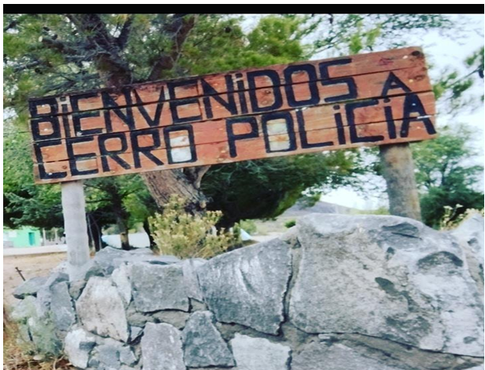
Descripción General
Cerro Policía es un pequeño pueblo situado en el sur de Río Negro. A lo largo de los años, este paraje ha crecido y en la actualidad cuenta con un Centro de Atención Primaria de Salud (CAPS), la Escuela Primaria 193 “José Sabino Rojas”, el Anexo 9 de la ESRN Rural Virtual, una Comisión de Fomento, un destacamento policial, un juzgado de paz y un salón hípico. Además, hay varios comercios que ofrecen productos a los habitantes.
Historia y Población
Los vecinos sostienen que Cerro Policía fue fundado en 1905, tomando su nombre de un cerrito con forma de gorro policial ubicado a 10 km de distancia. En sus inicios, era solo un campo con muy pocas casas (menos de 20), todas de adobe y con techos de jarilla. En 1935, se construyó la Escuela Primaria 193, que funcionaba como escuela hogar. Muchos chicos llegaban desde el campo, viviendo en el albergue de lunes a viernes para realizar sus estudios primarios, sin acceso a educación secundaria. Con el tiempo, se fueron estableciendo más organismos públicos, como el Juzgado de Paz, el Centro de Atención Primaria de Salud, la Comisión de Fomento, el destacamento policial y la ESRN Rural Virtual – Anexo 9 (establecida en 2010), brindando a los jóvenes la oportunidad de obtener un título secundario.
Ubicación
Cerro Policía se encuentra en la provincia de Río Negro, Argentina, en el departamento El Cuy, a aproximadamente 145 km de la ciudad de General Roca.
Habitantes
La población de Cerro Policía es de aproximadamente 225 habitantes.
Flora y Fauna
En el poblado se pueden localizar diversas especies animales, como gato montés, guanacos, liebres, pumas, ñandúes, piches y zorros. La vegetación es escasa y baja, condicionada por las características del ambiente de la estepa. Algunas especies vegetales presentes son neneo, alpataco, solupe, jarilla arrastrada, fume, chilladora, zampa, algarrobos, alelí y álamos.
Relieve
La naturaleza en Cerro Policía está compuesta por montes que no superan los dos metros de altura, formando parte de la estepa patagónica, lo que da lugar a un territorio más bien ondulado.
Clima
El clima en Cerro Policía es frío y seco, con características de semidesierto y muy pocas precipitaciones. Se caracterizan por fuertes vientos, lluvias o nevadas en invierno, y veranos secos y calurosos.
Recursos Económicos
La principal actividad económica en Cerro Policía se basa en trabajos rurales, con un enfoque en la cría de ganado ovino, así como en la venta de lana y carne. En el paraje y sus alrededores, viven alrededor de 35 pequeños crianceros, aunque solo unos pocos cuentan con hasta 500 ovejas, lo cual es necesario para intentar sostener la actividad.
Medios de Transporte
Cerro Policía dispone de un servicio de transporte público de colectivo que pertenece a la empresa “Las Grutas”, disponible los días martes y jueves cada 15 días. Los martes pasa a las 18:00 hs y el jueves vuelve a las 10:00 hs, recorriendo los siguientes lugares: Mencué, Naupa Huen, Chasicó, Aguada Guzmán, Cerro Policía y llegando a la ciudad de General Roca. Este es el único medio de transporte público disponible, y los pobladores también pueden movilizarse en vehículos particulares.
Aguada Guzmán
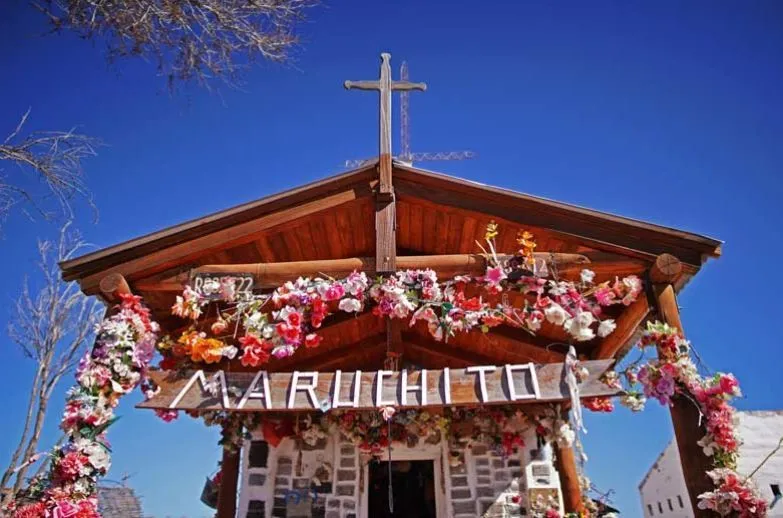
1. Descripción General del Paraje
Aguada Guzmán es un pueblo rural que comenzó a formarse entre 1900 y 1910, con la llegada de las primeras familias y comerciantes. Su nombre proviene de un vecino de apellido Guzmán, que vivía cerca de aguadas donde se reunían los animales.
2. Ubicación Relativa
País: Argentina
Provincia: Río Negro
Departamento: El Cuy
Región: Línea Sur
3. Ubicación Absoluta
Coordenadas Geográficas: [Por añadir si están disponibles]
4. Población
El paraje cuenta con cerca de 180 habitantes, de los cuales 110 residen en el paraje y 48 en los campos. En total, hay 36 varones y 12 mujeres en el campo.
5. Historia Fundación: Las primeras familias en establecerse fueron los Nock, Carro, Aranda y Gómez. Hechos Salientes: Aguada Guzmán celebra la fiesta del Maruchito en octubre, en honor a un niño llamado Pedro Farias que fue asesinado por su patrón.
6. Geografía Naturaleza: Situado en la estepa patagónica, con un relieve de mesetas y montañas bajas. El suelo es árido y duro, con plantas autóctonas como neneo, algarrobo y coirón. Clima: Frío y ventoso en otoño, invierno y parte de la primavera. Las precipitaciones son escasas y hay nieve en invierno.
7. Transporte
El transporte público pasa una vez al mes, viajando de Bariloche a General Roca. Los vecinos utilizan vehículos particulares y se movilizan a caballo.
8. Economía
La principal actividad económica es la cría de animales, como ovejas, chivos y caballos. La comunidad se abastece de luz y agua mediante un generador y paneles solares en la escuela.
9. Servicios Salud: La sala de primeros auxilios cuenta con un enfermero y un agente sanitario, y un médico visita cada 15 días. Educación: Hay una escuela primaria y secundaria en el paraje.
10. Cultura
Los vecinos disfrutan de actividades sociales como bailes camperos y carreras de caballos, además de compartir momentos con mate y tortas fritas.
Autores del Trabajo
Estudiante: Kevin Fernández
Clase: 11 - La Wiki de Paraje
Mencué
Descripción General del Paraje
Mencué es una localidad situada en el Departamento El Cuy, en la provincia de Río Negro, al norte de la Patagonia Argentina. Está rodeada de un entorno natural y tranquilo, con una población aproximada de 500 habitantes, que puede llegar a 650 si se suman los parajes cercanos. La mayoría de los residentes son pequeños crianceros de ovejas y chivos. En lengua mapudungún, "Mencué" significa "llevar algo al hombro".
Coordenadas
GPS: -40.41667, -69.63333
Accesibilidad
El único acceso a Mencué es a través de la Ruta Provincial 67.
Historia
Mencué fue fundado el 26 de noviembre de 1906, cuando el ganadero Francisco García Crespo plantó el primer alambrado en la región, iniciando las primeras majadas de animales lanar. Con el tiempo, otros hombres llegaron a trabajar en el establecimiento, lo que contribuyó al crecimiento económico y poblacional del área. Debido a este aumento, se hizo necesario establecer una Dependencia Policial, seguida de un Juzgado de Paz, fundado en 1910. Estas entidades se ubicaron en Curalauquen, a más de tres leguas de la actual Mencué.
Clima
El clima en Mencué es frío, con temperaturas que pueden descender a 0 grados bajo cero durante el invierno.
Transporte
Los medios de transporte disponibles en la localidad incluyen:
- Autos
- Motocicletas
- Colectivo (que pasa una vez al mes, recorriendo Gral Roca y Bariloche)
- Caballos (los crianceros a menudo viajan a caballo al pueblo)
Actividad Económica
La principal actividad económica de Mencué es la producción ovina, especialmente en actividades relacionadas con la lana.
Estudiante: Yesica Loncoman
Paraje Corralito (Río Negro)
Descripción del Lugar:
El Paraje Corralito se encuentra a 150 kilómetros de la ciudad de San Carlos de Bariloche, en la provincia de Río Negro, Argentina. Se accede desde la Ruta Nacional 237 hacia la represa hidroeléctrica Alicurá, y luego por camino de ripio de la ex Ruta Nacional Nº 40. Corralito está ubicado a 660 metros sobre el nivel del mar, en la confluencia del río Pichileufú y el arroyo Panquehuau, rodeado por un impresionante paisaje estepario con mesetas.
Ubicación y Descripción del Paraje: Provincia: Río Negro Departamento: Pilcaniyeu Latitud: -40.7167 Longitud: -70.7
Población:
El Paraje Corralito cuenta con aproximadamente 25 viviendas familiares y varios asentamientos rurales dispersos a kilómetros de distancia.
Historia:
No se sabe con certeza cuándo se fundó el paraje. Un vecino, Don Vergara Carlos, cuenta que, a principios del siglo XX, había mucho tránsito de ganado por el lugar. Su familia se asentó en el paraje en 1905 y desde entonces han desarrollado actividades agrícolas y ganaderas. Don Vergara destaca que su abuelo llegó en 1905 y su madre nació en 1912. Otro testimonio de la Sra. Ortega Nilda menciona el histórico Ramos Generales, que ha operado en el lugar por cerca de 100 años, desde 1928.
Geografía:
El clima es semiárido, con veranos calurosos y temperaturas promedio de 22°C, inviernos fríos con heladas que superan los -15°C, y fuertes vientos en primavera y otoño. La zona está rodeada de montañas y mesetas, con afloramientos de rocas sedimentarias y vestigios de ocupaciones indígenas antiguas.
Transporte:
Antiguamente, el transporte se realizaba con carretas tiradas por bueyes o caballos. Actualmente, se utilizan vehículos, aunque algunos aún usan caballos.
Economía:
La principal actividad económica es la agropecuaria. Los pobladores crían ganado vacuno, ovino y porcino. También cultivan plantas forrajeras y hortalizas, y en los valles protegidos, frutas como cerezas, peras, ciruelas, duraznos y manzanas. Además, se practica la irrigación artificial con canales para mejorar pasturas y cultivos.
Naupahuen
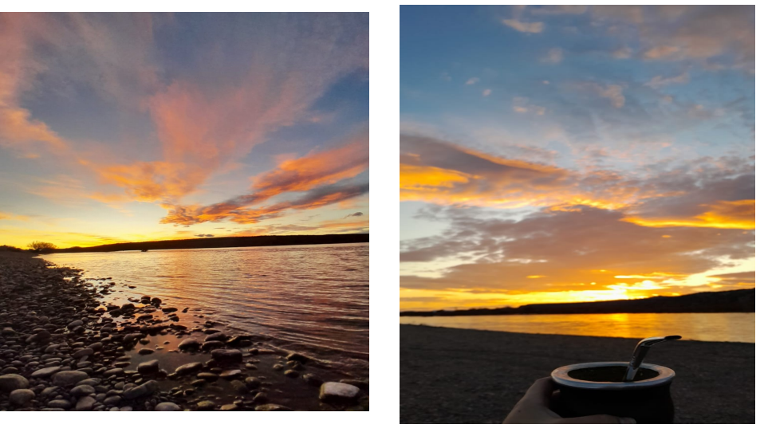
1. Inicio
Descripción General del Paraje:
El paraje de Naupa Huen es un pueblo históricamente significativo, lleno de animales y plantas, que ofrece buenos lugares para pasar un día de diversión y tranquilidad.
2. Ubicación Relativa
País: Naupa Huen se encuentra en Río Negro, Argentina.
Provincia: Está ubicado en el departamento de Cuy, al norte de la Patagonia Argentina, a orillas del Río Limay.
Distancias: Se encuentra a 250 kilómetros de la ciudad de General Roca y a 30 kilómetros de Picun Leufu.
3. Ubicación Absoluta
Naupa Huen se encuentra en un valle rodeado de montañas y mesetas, caracterizado por:
Paisaje: Árido y semiárido, con vegetación escasa adaptada al clima seco.
Montañas: Presencia del Cerro Naupa Huen que domina el valle.
Río Limay: Atraviesa el valle, proporcionando agua para la agricultura y la ganadería.
Clima: Templado-frío, con inviernos fríos y veranos suaves.
Suelos: Áridos y pedregosos, con tosca y piedra caliza.
Vegetación: Xerófila, con especies como coirón, neneo y calafate.
Fauna: Adaptada al clima seco, incluyendo guanacos, pumas, zorrinos y aves rapaces.
El área es rica en recursos naturales, como agua, tierra fértil y minerales, lo que ha permitido el desarrollo de la agricultura, ganadería y minería, aunque enfrenta desafíos ambientales como la erosión del suelo y la escasez de agua.
4. Población
Naupa Huen tiene alrededor de 170 habitantes.
5. Historia
La historia de Naupa Huen se remonta a la época prehispánica, cuando era habitada por pueblos indígenas como los Tehuelches y los Mapuches, que vivían allí gracias a la presencia de recursos naturales. Con la llegada de colonizadores europeos en el siglo XIX, la región comenzó a ser explorada.
Eventos Históricos Importantes:
1885: Creación de la Colonia Nahuel Huapi, que incluye la región de Naupa Huen.
1900: Establecimiento de la primera escuela en Naupa Huen.
1920: Creación del distrito de El Cuy, que incluye Naupa Huen.
1940: Inicio de la explotación petrolera en la región.
1960: Construcción de la primera iglesia en Naupa Huen.
1970: Construcción de la ruta nacional 237, mejorando las comunicaciones.
1985: Creación de la Comisión de Fomento de Naupa Huen.
1990: Inicio de la producción de energía hidroeléctrica en la región.
2000: Celebración del centenario de la fundación de Naupa Huen.
2010: Inicio de programas de turismo rural en la región.
6. Geografía
Naturaleza:
Naupa Huen se encuentra en el valle del Río Limay, en una región caracterizada por montañas, mesetas y valles.
Clima:
El clima en Naupa Huen es templado-frío, con inviernos fríos y veranos suaves. Hay una estación seca durante el verano y una estación húmeda durante el invierno.
7. Transporte
Las formas de transporte público se limitan a un colectivo que viaja un día al mes. No hay ferrocarriles disponibles.
8. Economía
Las actividades económicas de Naupa Huen se centran en:
Agricultura: Cultivo de trigo, cebada, avena, alfalfa y otros cultivos adaptados al clima semiárido.
Ganadería: Producción de carne ovina, caprina y bovina, así como lana.
Minería: Explotación de petróleo, gas natural y piedra caliza.
Turismo: Desarrollo de turismo rural, con actividades como cabalgatas y observación de fauna y flora.
Servicios: Comercio, alojamiento y alimentación para visitantes.
Artesanía: Producción de artesanías locales, como textiles y cerámica.
Apicultura: Producción de miel y otros productos apícolas.
Vitivinicultura: Cultivo de viñas y producción de vino.
Recursos y Producción:
Naupa Huen cuenta con una variedad de recursos naturales y produce diversos productos:
Recursos naturales: Tierra fértil, agua del río Limay, pastizales, yacimientos de petróleo y minerales.
La producción se centra en la agricultura, ganadería y explotación de recursos naturales, promoviendo la sostenibilidad y el manejo responsable de los mismos.
Río Chico
Aquí tienes el contenido sobre Río Chico organizado y estructurado de manera clara:
Río Chico
Inicio
Descripción General del Paraje
Río Chico es un pequeño paraje en Argentina que se caracteriza por su historia y su naturaleza. La llegada de los trenes y la construcción de la vía férrea han sido fundamentales para su desarrollo.
Ubicación Relativa
País: Argentina
Departamento: Ñorquincó
Región: Sur
Ubicación Absoluta
Coordenadas Geográficas: 41.709848° S, 70.477470° O
Población
La población de Río Chico es de aproximadamente 590 habitantes en total.
Fundación
El paraje no tiene un tiempo de fundación exacto, pero se sabe que entre 1930 y 1935, con el tendido de la vía férrea de Jacobacci a Esquel, se creó la estación Cerro Mesa, lo que marcó el inicio del asentamiento en Río Chico.
Poblamiento
Las primeras poblaciones se formaron gracias a la llegada de los rieles de tren, lo que facilitó el asentamiento de las primeras familias en el paraje, construyendo casas y formando una comunidad.
Hechos Salientes
El hecho más significativo en la historia de Río Chico fue la llegada de los trenes, que permitió el desarrollo de muchos pueblos y parajes en la zona rural.
Geografía
Naturaleza
Río Chico presenta un relieve de meseta, con cañadones, amplios valles y profundas depresiones. La región es rica en minerales, incluyendo diques de granito y otros tipos de rocas.
Clima
El clima predominante en Río Chico es frío extremo, con inviernos prolongados y veranos suaves. La región presenta sequías frecuentes y un clima ventoso, frío y seco.
Transporte
Los medios de transporte disponibles incluyen:
Vías ferroviarias
Vehículos particulares
Transporte (trafic y remis en ocasiones)
Economía
Las actividades económicas en Río Chico incluyen:
Agricultura: Cultivo de productos diversos.
Ganadería: Crianza de animales y producción de carne.
Pesca y caza: Actividades recreativas y alimenticias.
Turismo: Atrae visitantes a la región.
Artesanía: Producción de objetos locales y productos textiles.
Recursos y Producción
Los recursos naturales de Río Chico incluyen:
Río: Fuente de agua.
Árboles: Recursos maderables.
Minerales: Sal, caliza, limo arcilloso, piedra laja y áridos.
Producción Alimentos: Dulces, escabeches, alfalfa, quesos.
Textiles: Venta de lana ovina y pelo caprino, incluyendo chalecos, ponchos, fajas, peleras, sinchas, gorros de abrigo, medias y guantes.
Mamuel Choique
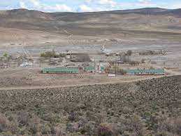
Descripción General del Paraje
El paraje de Mamuel Choique presenta una destacada amplitud turística relacionada con la espeleología, gracias a las cavernas naturales de formación cuaternaria que alberga.
Ubicación Relativa
Mamuel Choique se encuentra en el Departamento Ñorquincó, en el sudoeste de la provincia de Río Negro, Argentina. Está ubicado a 180 km de San Carlos de Bariloche y cuenta con una estación ferroviaria del Viejo Expreso Patagónico, más conocida como La Trochita. Los trabajadores ferroviarios realizan el mantenimiento de las vías para garantizar un tránsito seguro de "La Trochita". Además, en la zona se encuentra un lugar turístico conocido como “Las Pintadas”.
Pinturas de "Las Pintadas"
Las pinturas que integran la piedra pintada han sido ejecutadas en un afloramiento rocoso de tobas porfiríticas, ligeramente rojizas. Los colores utilizados en estas pinturas incluyen el rojo, el violáceo y el amarillo, que se confeccionaban con frutos, plantas y rocas molidas, utilizando sangre de los animales cazados y grasa como aglutinante.
Coordenadas Geográficas
Latitud: 41°46′16″S
Longitud: 70°08′13″O
Población
El paraje tiene aproximadamente 100 habitantes que se mantienen en la zona y en áreas aledañas.
Fundación
El paraje de Mamuel Choique fue fundado el 15 de septiembre de 1915.
Hechos Salientes
El aniversario del paraje se celebra el 16 de octubre, con diversas actividades que incluyen campeonatos de fútbol, compartidas con la comunidad, ciclismo y trekking.
Naturaleza
El paraje es bastante seco y gris, con muy poca agua y escasez de áreas verdes.
Clima
El clima es ventoso y frío, lo que limita el desarrollo de árboles en la región.
Medios de Transporte
Actualmente, existe un servicio de tráfico que realiza el recorrido de Ingeniero Jacobacci hasta El Bolsón, disponible solo los días lunes y viernes. También se encuentran vehículos particulares para el transporte.
Actividades Económicas
Las actividades económicas del paraje incluyen la venta de animales, lana y productos tejidos.
Autora
Cisneros Sofía – 5to Año
Sede: Mamuel Choique
Aguada Cecilio
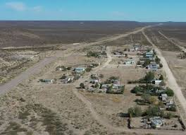
Descripción General del Paraje
[Introduce el paraje con una breve descripción que resuma su importancia y características generales.]
Ubicación Relativa
País: [Indica el país en el que se encuentra el paraje.]
Provincia: [Especifica la provincia o estado.]
Departamento: [Proporciona el nombre del departamento o área administrativa correspondiente, si aplica.]
Región: [Describe la región o área geográfica más amplia a la que pertenece el paraje.]
Ubicación Absoluta
Coordenadas Geográficas: [Proporciona las coordenadas exactas (latitud y longitud) del paraje.]
Población
Cantidad de Habitantes: [Ofrece los datos actuales sobre la población del paraje.]
Historia
Fundación: [Describe cuándo y cómo se fundó el paraje.]
Poblamiento: [Explica cómo se establecieron las primeras poblaciones en el área.]
Hechos Salientes: [Menciona eventos históricos importantes que han influido en el desarrollo del paraje.]
Geografía
Naturaleza: [Detalla las características naturales del paraje, incluyendo paisajes, formaciones geológicas, etc.]
Clima: [Describe el clima predominante, incluyendo aspectos como temperatura, precipitaciones y estaciones del año.]
Transporte
Medios de Transporte: [Indica las principales formas de transporte disponibles en el paraje, como carreteras, ferrocarriles, transporte público, etc.]
Economía
Actividades Económicas: [Explica las principales actividades económicas en el paraje, como agricultura, turismo, industria, etc.]
Recursos y Producción: [Menciona los recursos naturales y productos más relevantes obtenidos en el área.]
Sierra Pailemán
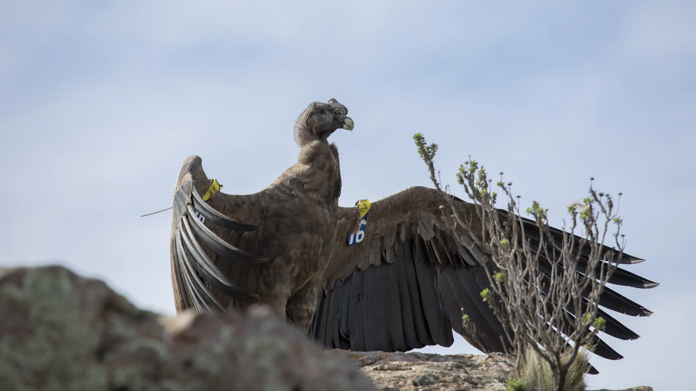
Descripción General del Paraje
[Introduce el paraje con una breve descripción que resuma su importancia y características generales.]
Ubicación Relativa
País: [Indica el país en el que se encuentra el paraje.]
Provincia: [Especifica la provincia o estado.]
Departamento: [Proporciona el nombre del departamento o área administrativa correspondiente, si aplica.]
Región: [Describe la región o área geográfica más amplia a la que pertenece el paraje.]
Ubicación Absoluta
Coordenadas Geográficas: [Proporciona las coordenadas exactas (latitud y longitud) del paraje.]
Población
Cantidad de Habitantes: [Ofrece los datos actuales sobre la población del paraje.]
Historia
Fundación: [Describe cuándo y cómo se fundó el paraje.]
Poblamiento: [Explica cómo se establecieron las primeras poblaciones en el área.]
Hechos Salientes: [Menciona eventos históricos importantes que han influido en el desarrollo del paraje.]
Geografía
Naturaleza: [Detalla las características naturales del paraje, incluyendo paisajes, formaciones geológicas, etc.]
Clima: [Describe el clima predominante, incluyendo aspectos como temperatura, precipitaciones y estaciones del año.]
Transporte
Medios de Transporte: [Indica las principales formas de transporte disponibles en el paraje, como carreteras, ferrocarriles, transporte público, etc.]
Economía
Actividades Económicas: [Explica las principales actividades económicas en el paraje, como agricultura, turismo, industria, etc.]
Recursos y Producción: [Menciona los recursos naturales y productos más relevantes obtenidos en el área.]
Arroyo Los Berros
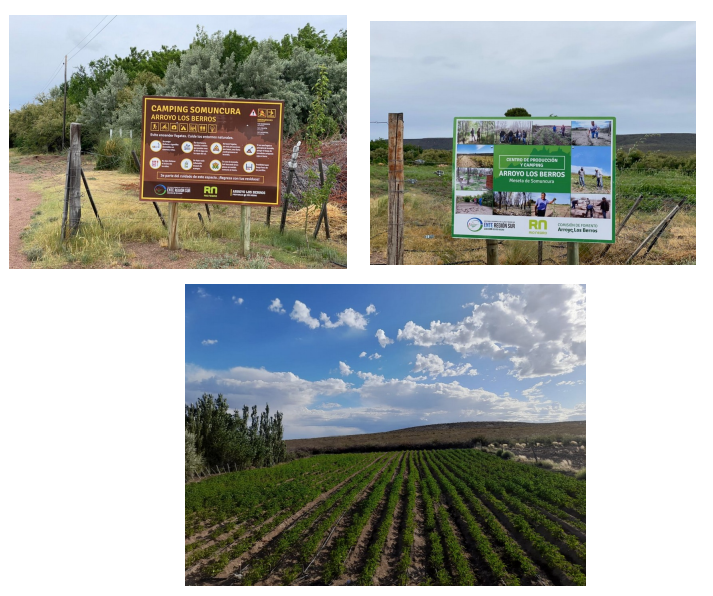
1. Inicio
Arroyo Los Berros es un paraje que se destaca por su tranquilidad, la calidad de sus habitantes, y la rica flora y fauna que lo rodea, lo que lo hace muy atractivo para los visitantes.
2. Ubicación Relativa
País: Argentina
Provincia: Río Negro
Departamento: Valcheta
Región: Patagónica
3. Ubicación Absoluta
Coordenadas Geográficas: -41.46667, -65.96667
4. Población
Actualmente, la población aproximada es de 126 habitantes, aunque muchos no tienen domicilio en el lugar.
5. Historia
Fundación: Fundado alrededor del año 1884.
Poblamiento: Se cree que el lugar fue descubierto durante una expedición, y los primeros habitantes se establecieron cerca del arroyo.
Hechos Salientes:
Entre 1970 y 1972 se realizó el estudio del acueducto que proveería agua a la mina Hipasam.
En 1987 se fundó la cooperativa "Villa Llequín".
En 1990 se instaló el servicio de televisión por aire.
6. Geografía
Naturaleza: El lugar está rodeado de mesetas, valles y cañadones, con arroyos que caracterizan su paisaje.
Clima:
Invierno: Frío y seco, con temperaturas que oscilan entre -3°C y 15°C.
Verano: Caluroso y seco, con temperaturas que varían entre 20°C y 40°C.
7. Transporte
Se accede al paraje a través de la Ruta Provincial N°61, Ruta Provincial N°58, y también por la Ruta N°5 desde Arroyo Ventana. Actualmente no hay transporte público disponible.
8. Economía
Actividades Económicas: La actividad principal era la ganadería ovina y caprina, aunque está en declive por la presencia de pumas. Actualmente se trabaja con cultivos de hortalizas y se desarrolla un proyecto de olivos.
Recursos y Producción: La producción de papa, cebolla y leña son los recursos más importantes en la localidad.
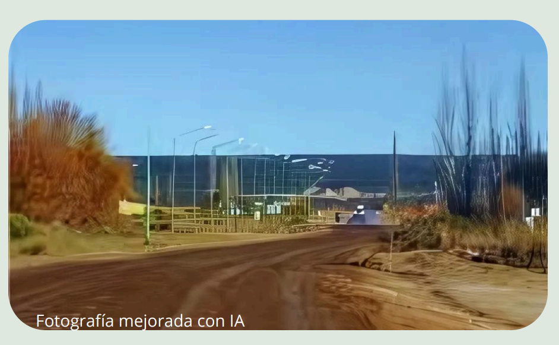
Peñas Blancas
Peñas Blancas, también conocida como Colonia Peñas Blancas, es una localidad y comisión de fomento ubicada al extremo norte de la provincia de Río Negro, en el departamento General Roca, al norte de la Patagonia Argentina. Esta colonia agrícolo-ganadera se encuentra a 35 kilómetros de la ciudad de Catriel, en una zona de producción petrolera de la provincia, y a 20 kilómetros de 25 de Mayo en la provincia de La Pampa.
Ubicación
Peñas Blancas se sitúa en:
País: Argentina
Provincia: Río Negro
Departamento: General Roca
Región: Patagonia
Coordenadas geográficas: Aproximadamente -39.0163 de latitud y -67.5905 de longitud.
Historia y Población
Peñas Blancas fue fundado en 1946 como parte de un proceso de colonización agrícola, buscando mejores condiciones de vida. Las primeras familias que se asentaron en la zona llegaron atraídas por sus tierras fértiles, lo que permitió el desarrollo de la agricultura y la ganadería. La construcción de caminos e infraestructura facilitó el poblamiento, impulsado por políticas gubernamentales que incentivaron la instalación de colonos.
Un evento significativo en la historia de Peñas Blancas ocurrió en 1976, cuando una gran inundación causó serios daños a la infraestructura y afectó a muchas familias, resaltando la vulnerabilidad de la región a fenómenos climáticos. Estos desafíos han influido en la planificación y gestión de recursos en el paraje, destacando su capacidad de adaptación a través del tiempo.
Naturaleza
Peñas Blancas se encuentra en una zona que exhibe características naturales propias de la Patagonia, con paisajes rurales que incluyen vastas extensiones de tierras áridas, pastizales y algunas áreas agrícolas. La flora y fauna local incluye especies adaptadas a un clima seco y continental, entre ellas horneros, chimangos, piches, jarilla y alpataco. Además, cuenta con la orilla del Río Colorado, el cual se utiliza para regar los campos.
Clima
El clima de Peñas Blancas es predominantemente árido y continental, con veranos cálidos e inviernos fríos. Las temperaturas en verano pueden alcanzar los 30 °C, mientras que en invierno pueden descender hasta -5 °C. Las precipitaciones son escasas y se distribuyen irregularmente a lo largo del año, siendo más comunes en la primavera y el otoño. Las estaciones del año son bien definidas, lo que influye en las actividades agrícolas de la región.
Transporte
Peñas Blancas está conectado principalmente a través de carreteras rurales que facilitan el acceso al paraje y a localidades cercanas. Muchas familias dependen de vehículos particulares para su movilidad. No hay ferrocarriles que pasen directamente por el paraje.
Economía
Las principales actividades económicas en Peñas Blancas se centran en la agricultura y la ganadería. La producción agrícola incluye cultivos como frutas y hortalizas, aprovechando las tierras fértiles de la región. La ganadería abarca la cría de ganado ovino y bovino. Los recursos naturales son limitados, pero la producción de alimentos, junto con la actividad agropecuaria, son los pilares de la economía local, contribuyendo al sustento de las familias y al desarrollo de la comunidad.
Laguna Blanca
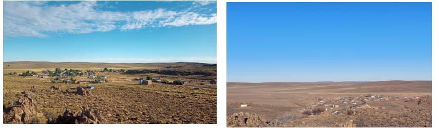
1. Descripción General del Paraje:
Laguna Blanca es un pequeño paraje ubicado en la provincia de Río Negro, dentro del departamento Pilcaniyeu.
Su nombre proviene de una laguna salitral cercana. Este lugar alberga aproximadamente a 245 habitantes, entre
urbanos y rurales, que disfrutan de la paz y tranquilidad que ofrece la región, además de su ritmo de vida pausado.
Las actividades artesanales, especialmente tejidos y fieltros, son de gran importancia para la comunidad,
preservando las tradiciones locales.
2. Ubicación Relativa:
- País: Argentina
- Provincia: Río Negro
- Departamento: Pilcaniyeu
- Región: Meseta Patagónica
4. Población:
Actualmente, viven aproximadamente 130 personas en el paraje. Sumando las familias rurales, la comunidad total
asciende a unos 245 habitantes.
5. Historia:
Laguna Blanca comenzó su desarrollo en la década de 1930 gracias al comercio de don García Crespo y Fernando Carro,
quienes establecieron un almacén de ramos generales. Esto impulsó el crecimiento de la comunidad, con la construcción
de la primera escuela y la llegada de nuevos pobladores. A lo largo de las décadas, se fueron construyendo más casas
y se establecieron instituciones como la Comisión de Fomento, la Sala de Primeros Auxilios, y la cooperativa ganadera
en la década de 1980. El acceso a electricidad llegó en 2004 con la instalación de un grupo electrógeno, seguido por
la instalación de paneles solares en 2014, y la llegada de gas en 2016. En 2022, un proyecto provincial mejoró la
conectividad de internet en la región, beneficiando tanto a los estudiantes como a la comunidad en general.
6. Geografía:
El relieve de Laguna Blanca es típico de la estepa patagónica, con extensas llanuras y pequeñas variaciones en la
elevación. La laguna salitral, que da nombre al paraje, es el principal cuerpo de agua, rodeada de cerros que permiten
vistas panorámicas. El clima es árido y semiárido, con estaciones bien definidas.
7. Transporte:
Laguna Blanca se conecta con otras ciudades a través de empresas de colectivos de línea, como "Las Grutas", que pasan
dos veces al mes. Este servicio une ciudades como San Carlos de Bariloche y General Roca, haciendo el recorrido por la
Línea Sur, incluyendo a Laguna Blanca.
8. Economía:
La economía local se basa principalmente en la ganadería y la prestación de servicios en instituciones como escuelas,
centros de salud y la Comisión de Fomento. Pequeños negocios como despensas multirrubros también contribuyen a la
economía local.
9. Autores del Trabajo:
Estudiantes: Suyay Maliqueo, Franco Cayu, Antu Ruiz, Lautaro Dominguez, Selene Varnes, Leonel Maliqueo
Curso: 5°, 4° y 3° Año
Tutora: Daiana Macaya
Área: Ciencias Sociales y Humanidades
Clase: 10
Conaniyeu
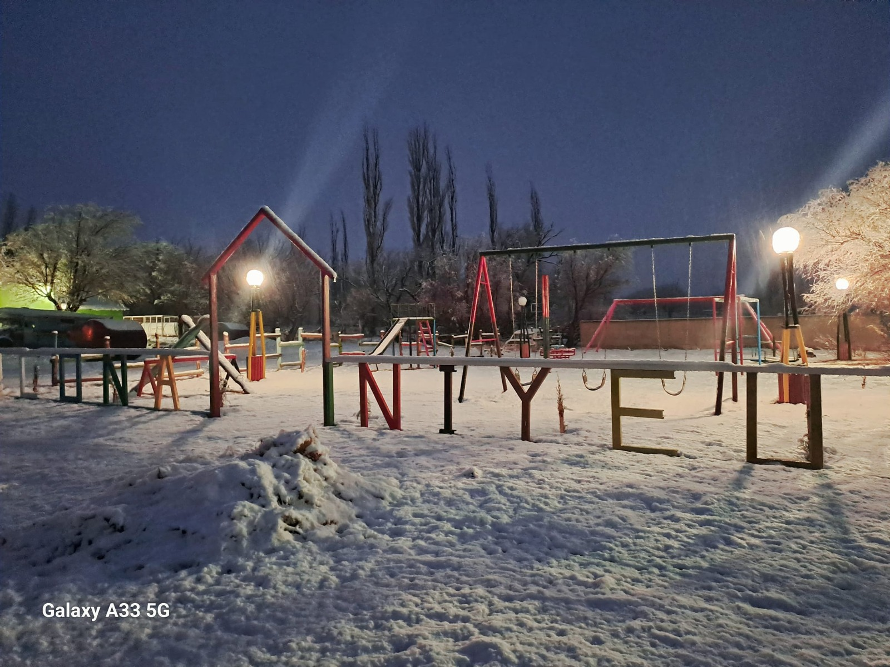
CONA NIYEU = Lugar del joven guerrero (Cona: Joven guerrero; Niyeu: Lugar)
1. Inicio
Cona Niyeu es uno de los pueblos más aislados de la provincia de Río Negro. Está ubicado al pie de la meseta de Somuncurá y destaca por su relieve de meseta. Al igual que toda la zona circundante.Actualmente, como a en todo el mundo, el clima cambió y sus temperaturas mínima en invierno son aproximadamente entre -7°C y -10°C.
2. Ubicación Relativa
- País: Argentina
- Provincia: Río Negro
- Departamento: Nueve de Julio
- Región: Es uno de los pueblos más aislados de la provincia
3. Ubicación Absoluta
- Coordenadas Geográficas: 41°51′57″S 66°56′17″O
4. Población
- Cantidad de Habitantes: Cuenta con 217 habitantes (Indec, 2010), lo que representa un incremento del 3% frente a los 211 habitantes (Indec, 2001) del censo anterior.
5. Historia
- Fundación: Cona Niyeu posee un sitio reconocido de generación en generación como CHENQUE (Sepoltura) del CONA (Joven guerrero y/o muchachos que se dedicaban por el bienestar de su comunidad). En honor a ese joven sepultado en el lugar se denominó al valle situado al sur de la Meseta de Somuncura, CONA NIYEU: “LUGAR DEL JOVEN GUERRERO”
- Poblamiento: Según datos históricos de la dirección de tierras y colonias, los primeros pobladores datan de 1906.
- Hechos Salientes: 24 DE JUNIO: Fecha en la que los primeros pobladores de la zona se reunían para celebrar la llegada del año nuevo o renovación del ciclo anual (MAPUCHE) WIÑOY TRIPANCU coincidente con el solsticio de invierno (Noche más larga) Y FESTIVOS PARA TODOS LOS PUEBLOS ORIGINARIOS.
6. Geografía
CONA NIYEU se ubica en el sudeste de la provincia de Río Negro y abarca parte de la meseta de Somún Curá. Se destacan algunas serranías como las de Campana Mahuida y las situadas en el rincón del arroyo Verde. La región está avenada por los arroyos Cona, Verde, Tambelén y Ventana y sus tributarios. En la constitución geológica de la región intervienen unidades metamórficas, ígneas y sedimentarias desarrolladas desde el Precámbrico hasta el presente. Entre los rasgos geomorfológicos más distintivos se destaca la meseta de Somún Curá, la cual está circundada por una ancha faja de depósitos de remoción en masa y pedimentos de flanco.
7. Hidrografía
En Cona Niyeu hay lagunas, tajamares, salitrales y el arroyo del cual se saca agua para beber y sustentar el pueblo. El agua del arroyo está en buenas condiciones y es de alta calidad. Las lagunas, tajamares y salitrales, al igual que algunos canales que van del mismo arroyo, se utilizan para los animales.
8. Aspectos Biológicos
La flora de Cona Niyeu es muy variada; en el verano, el valle se vuelve verde, mientras que en el invierno las temperaturas son frías. Algunas de las plantas silvestres que se encuentran son jarilla, tomillo, zampa, algarrobillo, molle y pichana. En cuanto a la fauna, se pueden encontrar perros, gatos, zorro, puma, guanacos, ovejas, caballos, entre otros.
9. Aspecto Humano
Una parte del paraje se dedica a la agricultura, incluyendo quintas, invernáculos y micro túneles para cultivar verduras. Algunas de estas verduras se venden, mientras que otras son para consumo propio, asegurando así el acceso a alimentos frescos.
10. Economía
- Actividades Económicas: Cría de animales, huertas, arrestarías (tales como tejidos en telar mapuche), Hilado de lana de guanaco y ovejas, Venta de huevos, etc
- Recursos y Producción: Ganadería ovina, caprina y agricultura
El Caín
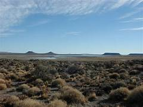
1. Inicio
Descripción General del Paraje:
[Introduce el paraje con una breve descripción que resuma su importancia y características generales.]
2. Ubicación Relativa
- País: [Indica el país en el que se encuentra el paraje.]
- Provincia: [Especifica la provincia o estado.]
- Departamento: [Proporciona el nombre del departamento o área administrativa correspondiente, si aplica.]
- Región: [Describe la región o área geográfica más amplia a la que pertenece el paraje.]
3. Ubicación Absoluta
- Coordenadas Geográficas: [Proporciona las coordenadas exactas (latitud y longitud) del paraje.]
4. Población
- Cantidad de Habitantes: [Ofrece los datos actuales sobre la población del paraje.]
5. Historia
- Fundación: [Describe cuándo y cómo se fundó el paraje.]
- Poblamiento: [Explica cómo se establecieron las primeras poblaciones en el área.]
- Hechos Salientes: [Menciona eventos históricos importantes que han influido en el desarrollo del paraje.]
6. Geografía
- Naturaleza: [Detalla las características naturales del paraje, incluyendo paisajes, formaciones geológicas, etc.]
- Clima: [Describe el clima predominante, incluyendo aspectos como temperatura, precipitaciones y estaciones del año.]
7. Transporte
- Medios de Transporte: [Indica las principales formas de transporte disponibles en el paraje, como carreteras, ferrocarriles, transporte público, etc.]
8. Economía
- Actividades Económicas: [Explica las principales actividades económicas en el paraje, como agricultura, turismo, industria, etc.]
- Recursos y Producción: [Menciona los recursos naturales y productos más relevantes obtenidos en el área.]
Lago Pellegrini
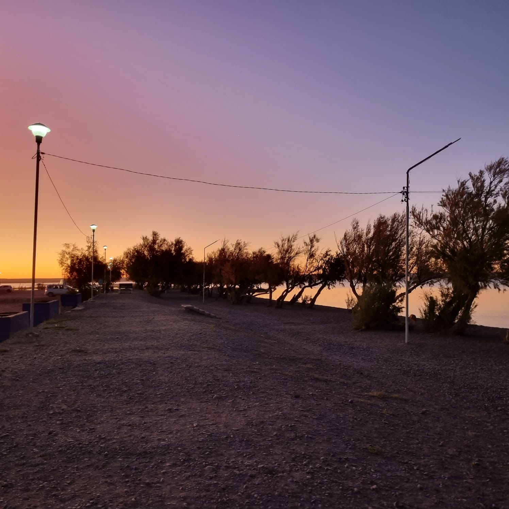
1. Descripción General del Paraje
Lago Pellegrini es un lago de gran importancia en la provincia de Río Negro, Argentina. Su ubicación y características lo convierten en un destino turístico atractivo, ofreciendo diversas actividades recreativas como navegación, pesca y camping.
2. Ubicación Relativa País: Argentina Provincia: Río Negro Departamento: General Roca Ruta: Se encuentra sobre la ruta 70, cerca de General Roca.
3. Ubicación Absoluta Coordenadas Geográficas: Latitud: 38° 40' 00" S Longitud: 68° 00' 00" O Altitud: 270 m sobre el nivel del mar.
4. Población
La población aproximada en la zona del Lago Pellegrini es de 20,000 habitantes.
5. Historia Contexto Inicial: Antes de la construcción del lago, la región era árida y poco poblada. La necesidad de mejorar la producción agrícola y ganadera llevó a implementar proyectos de irrigación en la década de 1940. Construcción de la Represa: En 1962, comenzó la construcción de la represa sobre el río Neuquén, creando el Lago Pellegrini. La represa se inauguró en 1967 y permitió almacenar agua para riego, transformando el paisaje local. Nacimiento del Paraje: La creación del lago atrajo a nuevos pobladores que buscaban oportunidades. La disponibilidad de agua transformó las tierras áridas en terrenos cultivables.
Hechos Salientes:
Inauguración del Lago (1967).
Desarrollo económico en las décadas de 1970 y 1980, centrado en la agricultura y ganadería.
Crisis económica en la década de 2000, que llevó a nuevas iniciativas de diversificación económica, incluyendo el turismo.
Reconocimiento turístico en el siglo XXI, con un creciente interés en actividades recreativas como la pesca deportiva y el avistamiento de aves.
6. Geografía Naturaleza: Lago Pellegrini es un lugar rodeado de montañas y ríos, con una rica biodiversidad que incluye diversas especies de aves y fauna autóctona. Vegetación: La flora es típica de la estepa patagónica, con especies como neneo, algarrobo y coirón. Clima: El clima es predominantemente seco, con estaciones bien marcadas. Las temperaturas oscilan entre 30°C y 40°C en verano y 5°C a 25°C en invierno, con precipitaciones concentradas entre noviembre y marzo.
7. Transporte
El balneario se conecta con la región por la ruta provincial N°1, con opciones de transporte público, incluidos colectivos y combis.
8. Economía Actividades Económicas: La principal actividad económica es el turismo, especialmente en alta temporada (diciembre a febrero). Los emprendedores locales ofrecen camping, rafting, restaurantes y cabañas. También se practica la ganadería, con cría de ovejas, caballos y chivos. Recursos y Producción:
Naturales: Agua del lago, suelo fértil y biodiversidad.
Productos Obtenidos: Maíz, soja, trigo y cría de ganado. La pesca es una actividad destacada en el lago.
9. Autores del Trabajo Estudiantes: Vero Urrutia, Camila Oses Sede: Lago Pellegrini Tutor: Yanet Brusain Clase: 11 de Sociales
Villa Llanquín
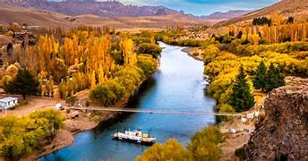
1. Descripción General del Paraje
Villa Llanquín es un paraje rural ubicado sobre la costa del Río Limay, en la provincia de Río Negro, Argentina. Su entorno natural y su creciente desarrollo turístico lo convierten en un destino atractivo, donde se pueden realizar actividades como pesca, senderismo y camping.
2. Ubicación Relativa País: Argentina Provincia: Río Negro Departamento: Pilcaniyeu Ruta: Acceso por la ruta nacional N.º 237.
3. Ubicación Absoluta Coordenadas Geográficas: Latitud: 40° 53' 44" S Longitud: 71° 02' 12" O Altitud: 1,050 m sobre el nivel del mar.
4. Población
La población aproximada en Villa Llanquín es de 160 habitantes.
5. Historia Contexto Inicial: Antes de la fundación de Villa Llanquín, la región era una zona árida y escasamente poblada. En 1892, el Estado entregó tierras a Ignacio Llanquín, lo que marcó el inicio del asentamiento. Hechos Relevantes:
Fundación de la escuela primaria, inicialmente proyectada como aldea escolar.
Construcción de la balsa en 1946 y la pasarela peatonal en 1984, que mejoraron el acceso a la zona.
Crecimiento poblacional gracias a la disponibilidad de agua y recursos.
6. Geografía Naturaleza: Villa Llanquín se encuentra en el área natural protegida del Río Limay, rodeada de montañas y ríos, con rica biodiversidad, incluyendo diversas especies de aves y fauna autóctona. Vegetación: La flora incluye Maitén, Laura, Moye, Sauce y Chacay, típica de la estepa patagónica. Clima: El clima es seco, con temperaturas que oscilan entre 30 °C y 36 °C en verano, y de -12 °C a 5 °C en invierno, con precipitaciones concentradas entre noviembre y marzo.
7. Transporte
El acceso a Villa Llanquín se realiza por la ruta nacional N.º 237 y caminos vecinales que conectan con la ruta N.º 23 y Corralito. Existen opciones de transporte público limitadas.
8. Economía Actividades Económicas: La economía local se basa principalmente en la cría de ganado ovino y caprino, así como en el creciente turismo, que ofrece actividades recreativas como rafting y pesca. Recursos y Producción:
Naturales: Agua del río Limay, suelo fértil y biodiversidad.
Productos Obtenidos: Producción de ovejas y cabras, así como pesca deportiva en el río.
9. Autores del Trabajo Estudiantes: [Nombres de los estudiantes] Sede: Villa Llanquín Tutor: [Nombre del tutor] Clase: [Clase correspondiente]
El Manso
1. Descripción General del Paraje
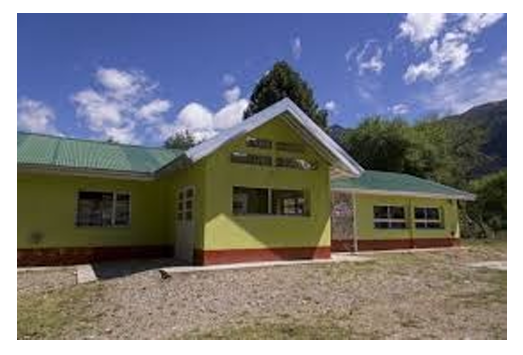
El Manso es un pequeño paraje de campo rodeado de montañas y ríos, conocido por su diversidad de paisajes y atractivo natural.
2. Ubicación Relativa País: Argentina Provincia: Río Negro Departamento: Bariloche
4. Población
El Manso tiene alrededor de 683 habitantes, con una comunidad que se caracteriza por su cercanía y colaboración mutua.
5. Historia Fundación: La fecha precisa de la fundación se desconoce, ya que los pobladores llegaron y se instalaron de forma independiente. Poblamiento: A principios del siglo XX, entre 1885 y 1899, se registró la llegada de los primeros pobladores, siendo Santos Turra uno de los primeros en ingresar desde Cochamó. Muchos se establecieron en la parte norte del río Manso, motivados por la esperanza de ser propietarios de su propia tierra.
Hechos Salientes:
A mediados del siglo XIX, Argentina y Chile organizaron una estrategia para la ocupación definitiva de los espacios australes, lo que llevó a conflictos con los indígenas.
Estos procesos resultaron en la reducción de la población indígena y su reubicación en territorios específicos.
6. Naturaleza
El Manso es un lugar atractivo por su entorno natural, con una variedad de paisajes, fauna y flora que atraen a turistas. El clima presenta cuatro estaciones bien marcadas, aunque el invierno suele ser lluvioso, provocando inundaciones en ocasiones.
7. Transporte
La mayoría de los habitantes del paraje tienen autos y ofrecen transporte a quienes no disponen de medios. Además, hay un colectivo llamado "koko" que ingresa al paraje todos los miércoles por la mañana y regresa por la tarde.
8. Actividades Económicas
La principal actividad económica en El Manso es el turismo, con opciones como camping, rafting, restaurantes y cabañas. Los propietarios de estos emprendimientos generan empleo para los habitantes del paraje, fomentando la colaboración entre la comunidad.
9. Autores del Trabajo Estudiantes: Lucía Soria, Milagros Henríquez, Ailén Calfu, Catalina Escobar, Ximena Monsalve, Milagros Montaño Curso: 5° año Clase: 11 - Ciencias Sociales
El Cóndor
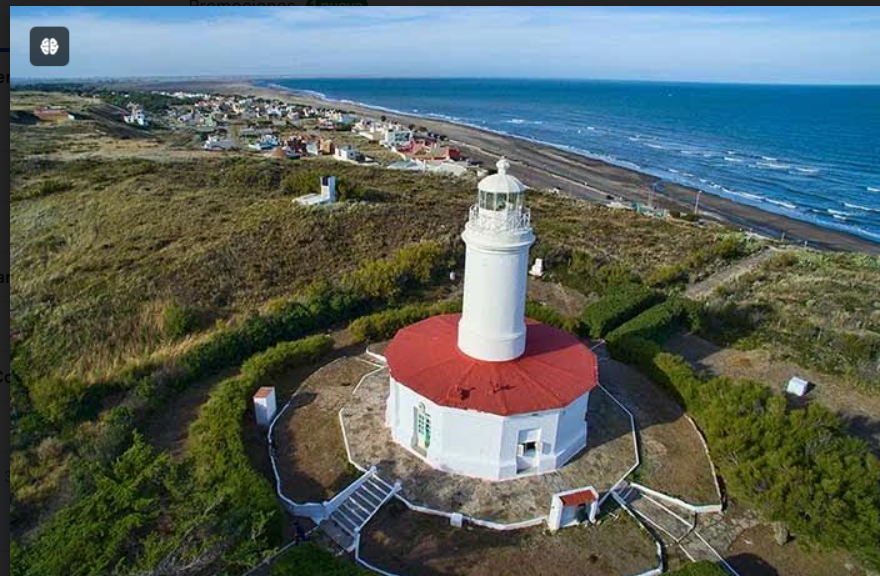
1. Descripción General del Paraje
El Cóndor es una pequeña villa balnearia agreste, ubicada en la provincia de Río Negro, Patagonia Argentina. Se encuentra en la costa del océano Atlántico, sobre la margen sur de la desembocadura del Río Negro, cerca de Viedma, la capital de la provincia.
2. Ubicación Relativa Continentes: América del Sur País: Argentina Región: Patagonia Norte Provincia: Río Negro Departamento: Adolfo Alsina
4. Población
El Cóndor cuenta con aproximadamente 1,000 habitantes. El proceso de poblamiento comenzó como un centro de interés para la pesca, con familias principalmente italianas que venían de Viedma y Carmen de Patagones. Las tierras eran de propiedad privada, lo que generó una lucha judicial para poder comprar lotes legalmente.
5. Fundación Fecha: 22 de junio de 1920. Descripción: El balneario comenzó a poblarse con carpas y casillas de madera. El farmacéutico Javier Massini fue el principal impulsor de la colonización del lugar. Las primeras viviendas se construyeron entre 1913 y 1919, y en 1920 se autorizó la lotificación de las tierras de la familia Harrieta. El lugar fue conocido inicialmente como “Las Carpas”, luego “La Boca”, “Villa Mazzini” y finalmente “El Cóndor” en homenaje a un barco danés que encalló frente al faro.
6. Hechos Salientes
Inicio del transporte público.
Origen como un pueblo de pescadores.
Trazado y pavimentación de caminos.
Inauguración del primer hotel "Achavil".
Creación de la escuela hogar.
Mayor colonia de loros barranqueros del mundo.
Fiesta del Mar y El Acampante.
Faro más antiguo de la Patagonia.
Mirador "Ceferino".
Observación de fauna autóctona y deportes de viento.
7. Geografía Naturaleza: El Cóndor es conocido por su variada población de aves, como churrinches y loros barranqueros. También se observan mamíferos como mara, liebre europea, vizcachas y zorros. Vegetación: Pertenece a la estepa patagónica, con monte bajo y escasos tamariscos, eucaliptos y siempre verdes. El paisaje incluye dunas, acantilados y restingas.
8. Clima
El clima se caracteriza por el predominio del viento patagónico, con estaciones bien marcadas en cuanto a las temperaturas.
9. Transporte
El balneario se conecta con Viedma por la ruta provincial N°1, con transporte público disponible en ocasiones.
10. Economía
La principal actividad económica es el turismo, especialmente en alta temporada (diciembre a febrero). La ganadería también es una actividad presente.
Recursos y Producción Naturales: Pesca, playa y paisaje. Históricos y Culturales:
Faro de Río Negro
Memorial de Malvinas
Mirador "Ceferino"
Paseo de Artesanos
Fiesta del Mar y El Acampante
Casillas restauradas de los primeros pobladores.
11. Autora del Trabajo Alumna: Mora Paloma Sede: El Cóndor Curso: 5° año Tutora: Karen Seguí Fecha: 30/9/24
Valle Verde
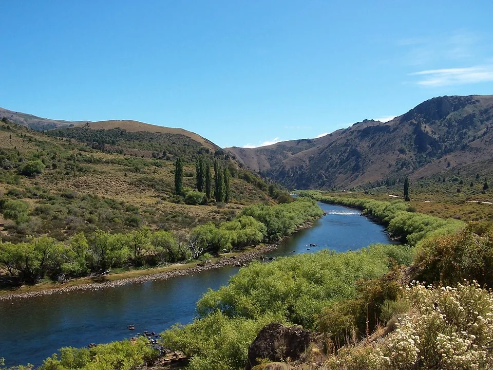
1. Inicio
Descripción General del Paraje:
[Introduce el paraje con una breve descripción que resuma su importancia y características generales.]
2. Ubicación Relativa
- País: [Indica el país en el que se encuentra el paraje.]
- Provincia: [Especifica la provincia o estado.]
- Departamento: [Proporciona el nombre del departamento o área administrativa correspondiente, si aplica.]
- Región: [Describe la región o área geográfica más amplia a la que pertenece el paraje.]
3. Ubicación Absoluta
- Coordenadas Geográficas: [Proporciona las coordenadas exactas (latitud y longitud) del paraje.]
4. Población
- Cantidad de Habitantes: [Ofrece los datos actuales sobre la población del paraje.]
5. Historia
- Fundación: [Describe cuándo y cómo se fundó el paraje.]
- Poblamiento: [Explica cómo se establecieron las primeras poblaciones en el área.]
- Hechos Salientes: [Menciona eventos históricos importantes que han influido en el desarrollo del paraje.]
6. Geografía
- Naturaleza: [Detalla las características naturales del paraje, incluyendo paisajes, formaciones geológicas, etc.]
- Clima: [Describe el clima predominante, incluyendo aspectos como temperatura, precipitaciones y estaciones del año.]
7. Transporte
- Medios de Transporte: [Indica las principales formas de transporte disponibles en el paraje, como carreteras, ferrocarriles, transporte público, etc.]
8. Economía
- Actividades Económicas: [Explica las principales actividades económicas en el paraje, como agricultura, turismo, industria, etc.]
- Recursos y Producción: [Menciona los recursos naturales y productos más relevantes obtenidos en el área.]
Colan Conhue
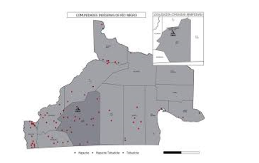
1. Descripción General del Paraje:
Colan Conhue, cuyo nombre en idioma mapuche significa "aguas perdidas", es una pequeña localidad ubicada en la región de la Línea Sur de la provincia de Río Negro. Con una población aproximada de 113 a 160 habitantes, está situada en el Departamento 25 de Mayo, a 93 km al norte de Ingeniero Jacobacci.
2. Ubicación Relativa: País: Argentina Provincia: Río Negro Región: Patagonia - Línea Sur Departamento: 25 de Mayo
4. Población:
Colan Conhue tiene entre 113 y 160 habitantes distribuidos en pequeños parajes como Colan Conhue Grande, Tromenco y Fita Ruin.
5. Historia: Fecha de Fundación: 1964
La comunidad comenzó a formarse alrededor de la creación de la Escuela Hogar Nº216, siendo esta una de las instituciones más importantes de la localidad. Los vecinos celebran con entusiasmo el aniversario del paraje, manteniendo vivas las tradiciones.
6. Naturaleza:
Colan Conhue se encuentra en la región de la Línea Sur, caracterizada por su altitud y clima árido. La vegetación es escasa, y el paisaje está dominado por montañas bajas y mesetas típicas de la Patagonia.
7. Transporte:
El acceso a Colan Conhue se realiza principalmente por caminos rurales que conectan a la comunidad con localidades cercanas como Jacobacci. Los habitantes dependen principalmente de vehículos particulares.
8. Actividades Económicas:
La principal actividad económica es la ganadería, destacándose la esquila y el mantenimiento de los campos. A nivel público, las instituciones como la escuela, el centro de salud y la Comisión de Fomento juegan un papel clave en el desarrollo local.
9. Instituciones:
Colan Conhue cuenta con varias instituciones que prestan servicios esenciales a la comunidad:
Escuela Hogar Nº 216
Comisión de Fomento
Destacamento Policial
Sala de Primeros Auxilios
Sala de Usos Múltiples (SUM)
Iglesias
Escuela de Arte Popular del IUPA
10. Autores del Trabajo:
Estudiante: Vilma Cabrera
Curso: 5° año
Blancura Centro
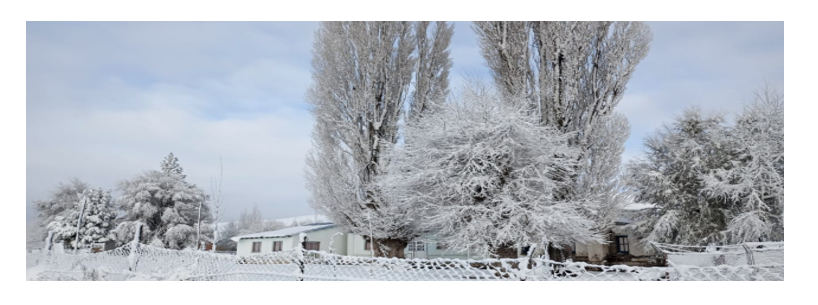
1. Descripción General del Paraje
Blancura Centro es un paraje de la Línea Sur en el departamento El Cuy, ubicado en la estepa patagónica a 250 km de San Carlos de Bariloche, 280 km de General Roca y a 40 km de la represa hidroeléctrica Piedra del Águila.
2. Ubicación Relativa
País: Argentina
Provincia: Río Negro
Departamento: El Cuy
Región: Línea Sur
3. Ubicación Absoluta
Coordenadas Geográficas: [Por añadir si están disponibles]
4. Población
Blancura Centro cuenta con una población de 52 habitantes, de los cuales el 50% vive en el campo. En la aldea escolar reside el resto de la población durante el ciclo lectivo para poder escolarizar a sus hijos.
5. Historia
Fundación: Las familias Huachucura y Maliqueo fueron los primeros pobladores que se trasladaron para escolarizar a sus hijos. En 1942, el señor Pichumil cedió parte de su terreno para construir la aldea escolar y la escuela primaria N° 174.
Hechos Salientes: Cada 24 de junio se celebra el We Tripantu, la renovación del equilibrio de la naturaleza, un evento significativo para la comunidad mapuche.
6. Geografía
Naturaleza: Situada en la estepa patagónica, con suelos arenosos y rocosos. En los mallines se encuentran aguadas y arroyos.
Clima: Seco y árido, con temperaturas bajo cero durante el otoño e invierno. La nieve es frecuente, y los caminos son intransitables en invierno.
7. Transporte
Las formas de transporte disponibles son vehículos particulares, ya que no hay transporte público. Los pobladores suelen trasladarse a caballo y enfrentan dificultades en invierno por nieve y barro.
8. Economía
La principal actividad económica es la ganadería, con énfasis en la venta de carne y el acopio de lana en la época de esquila.
9. Autores del Trabajo
Estudiantes: Yènifer Carrilaf, Luján Laciár
Sede: Blancura Centro
Ciclo: 4° Año - Ciclo Orientado
Materia: Ciencias Sociales y Humanidades
Clase: 11 - La Wiki de Paraje